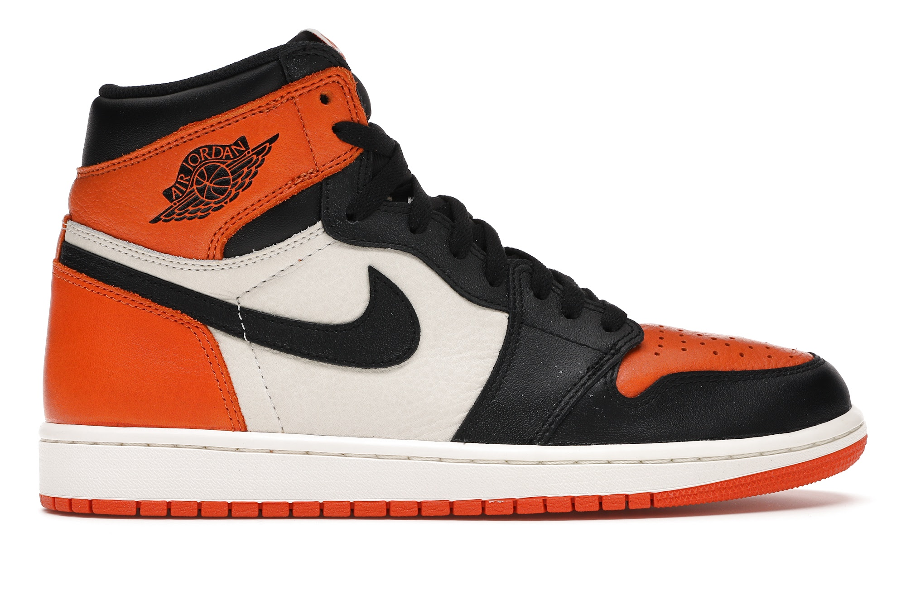

NEW TRENDS APPEAR EVERY DAY … KEEP UP
IN THE PAST THREE YEARS WE HAVE SEEN A SHIFT FROM SPORTSWEAR TO MORE CASUAL AND COMFORTABLE WEAR. THE WAY SHOE TECHNOLOGY HAS BEEN REVOLUTIONALIZING, ALLOWS FOR MORE STYLES TO BE PREFERRED. THE REEMERGENCE OF THE NIKE SB HAS BEEN SURREAL.
TRENDS WE ARE LOVING TODAY

Dad Shoes are completely taking over. It appears that as we go in time a comfortable clean shoe is just the way to go. Its hard to go back from comfortability after you expand your fashion into this trend. Learn why so many people cannot take off these New Balances and other amazing 'dad' shoes'.

Honestly it is a little shocking that retro runners haven't been in style for so long. There are so many different styles who anyone can enjoy. Nike has been going crazy dropping different Nike Cortez colorways and these beautiful Nike Tailwinds shown above. Don't forget about Asics and Rebooks, they got some sick retor runners that everyone should check out. Read about some of the best options you should get your hands on!
CONTROVERSIAL TRENDS
EVERY ONCE IN A WHILE, WE GET SOME SHOES THAT ARE QUESTIONABLE. SOME OF THEM ARE JUST HORRENDOUS WHILE OTHERS MAY ACTUALLY BE WORTH A WHILE… WHAT DO YOU THINK ABOUT THESE?


.jpg)
SHOE OF THE DAY
